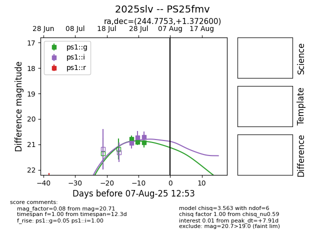

Target 2025slv at 2025-08-07 15:11, see:
TNS: wis-tns.org/object/2025slv
YSE: ziggy.ucolick.org/yse/transient_detail/2025slv
alt names
2025slv (yse,tns)
PS25fmv (panstarrs)
coordinates:
equatorial (ra, dec) = (244.7753,+1.37260)
galactic (l, b) = (14.6566,+34.03690)
photometry
last ps1::g=20.92, ps1::i=20.71
3 ps1::g, 3 ps1::i detections
